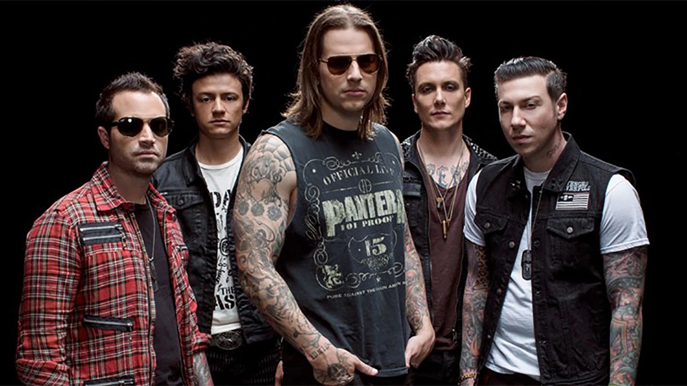
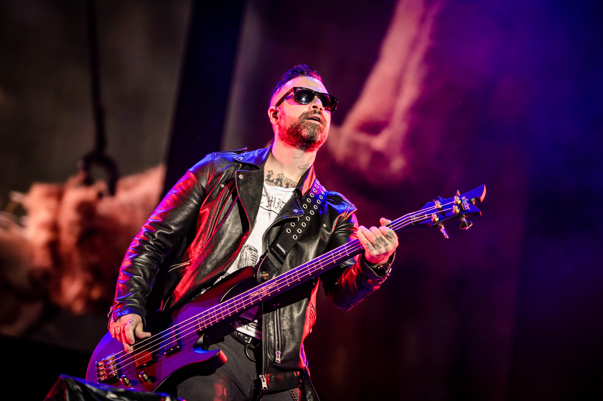

Avenged Sevenfold's New Release
In a move that completely bypasses traditional instruments, the heavy metal pioneers revealed the entire record was tracked using experimental neural-link technology to translate their direct thoughts into audio.
"We got tired of the physical limitations of fingers on strings and sticks on drums," said frontman M. Shadows. "With this new tech, if Synyster Gates imagines a guitar solo moving at the speed of light, the software instantly generates the exact audio wave. We are literally downloading the music straight from our cerebral cortex."
Early studio reports indicate Synaptic Static is the band’s most chaotic and unpredictable work to date. Because the technology captures raw emotion, listeners can expect sudden sonic shifts based on the band members' real-time moods during tracking.
The Instrumentation: Heavy guitar riffs morph into industrial techno beats whenever a band member experiences a spike in adrenaline. The Vocals: M. Shadows tracked his vocals entirely in silence, sitting in a dark room while thinking the lyrics with intense emotional conviction. The Chaos: Drummer Brooks Wackerman reportedly caused a studio computer crash after drinking three energy drinks, resulting in a drum beat calculation of 900 beats per minute.

The album’s rollout will feature an unprecedented distribution method. Alongside standard streaming platforms, Avenged Sevenfold is releasing a limited-edition "Neural Headband."
Fans wearing the device while listening will experience real-time haptic pulses and visual flashes mapped to the band’s original brainwaves during the recording sessions. Pre-orders for Synaptic Static open next month, with the lead single, Thought Crimes & Bass Lines, debuting on global airwaves this Friday.